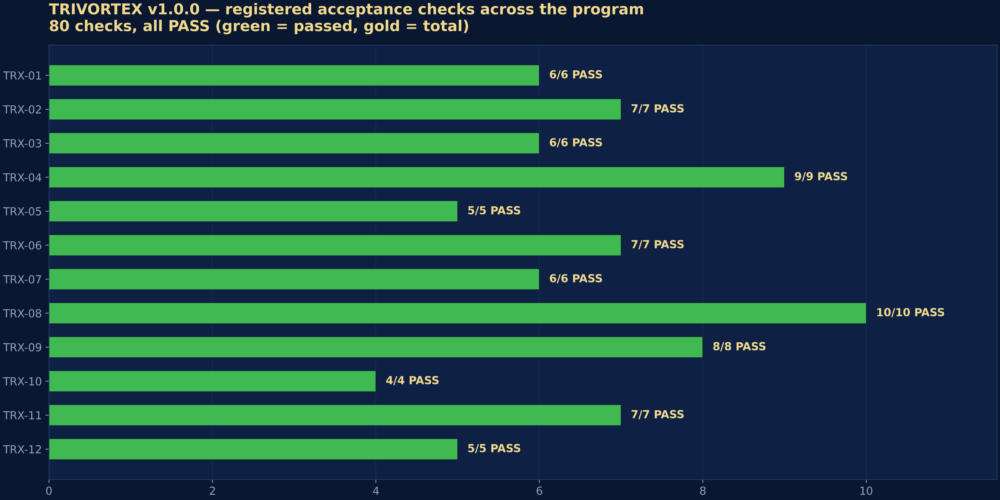
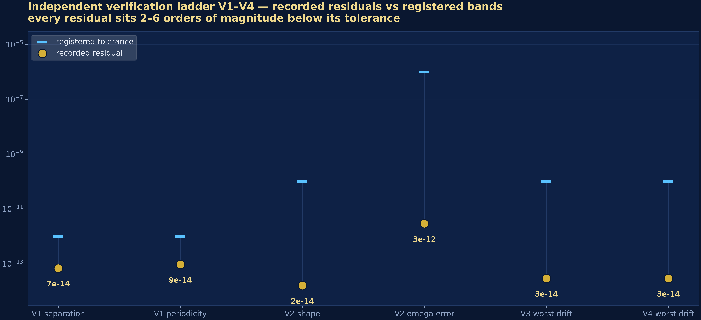

Extended Research Program
Twelve executable studies that expand TRIVORTEX from one document into a research program around the three-body problem — through laser optics, quantum mechanics, trapped ions, celestial mechanics and gravitational waves. Ten of the twelve are laser-powered.
Publication format (version 1.0.0)
Every study carries the full publication format: a schematic diagram and four 300-DPI ultra-resolution figures, a bilingual monograph — Russian and English as separate documents, each in a typeset PDF and an editable DOCX (ten sections + appendices: abstract, historical introduction, mathematical model, numerical method, analysis, discussion, conclusions, references, BibTeX) — and a 26-section README generated deterministically from the committed content pack. The binding standard is _FORMAT_SPEC.md.


Animations & the reading room (v1.0.0)
The program now moves and reads like a library: four seamless
orbital animations (GIF + MP4) — the Theorem 3.1 breathing ring,
the Chenciner–Montgomery figure eight, the Lagrange triangle and laser
station-keeping at the photogravitational L4 — and a
reading room of 28 typeset PDFs + 28 editable DOCX
(Russian and English separate): one monograph per study, the annotated
core book and the program
compendium. Everything rebuilds with make animations and
make pdf-library.
Why these twelve
The vortex document solves the three-body problem with one special tool: a Chaplygin-type topological integral and a rotating equilateral choreography (Theorem 3.1). The extended program asks the natural next question — where else does the same mathematics live? The answer spans twelve physical systems: a rigidly rotating equilateral triangle appears in laser-dressed libration points (TRX-01), in beams of a Kerr photon fluid (TRX-04), in optical vortices (TRX-05), in a laser-cooled ion crystal (TRX-08), in the Kirchhoff vortex trio itself (TRX-09), and in the emitter geometry of the gravitational waves (TRX-11). Each study is a self-contained laboratory: equations, a deterministic numerical experiment, quantitative acceptance checks with published tolerances, a JSON protocol and a committed SVG figure.
The twelve studies
TRX-01 — Laser-dressed restricted 3-body problem
Laser photon pressure reduces a primary's pull by (1-beta): libration points shift, L4 analogue migrates, Jacobi integral holds to 1e-10.
key result: L1 = 0.8369151 (Earth-Moon)
TRX-02 — Resonant three-wave mixing
The integrable three-body of nonlinear optics: pump, signal, idler in a chi(2) crystal with exact Manley-Rowe invariants and the tanh^2 SHG law.
key result: invariant drift <= 4.5e-15
TRX-03 — Three-soliton molecule (fiber laser)
Three ultrashort pulses bind into a phase-locked molecule; relaxation, conservative dynamics and the breathing normal mode.
key result: spacing s* = 0.2018927
TRX-04 — Photon fluid: three Kerr solitons
Spatial laser solitons in a focusing Kerr medium: rigidly rotating Lagrange triangle of beams, antiphase repulsion, bound binary with precession.
key result: omega matched to 1.4e-8
TRX-05 — Optical vortices = point vortices
Phase singularities of a paraxial laser field move like Kirchhoff vortices: a three-lobed rotating pattern with total winding number 3.
key result: omega to 1e-8; I = a^2
TRX-06 — Helium as the Coulomb three-body problem
Classical trajectory Monte Carlo of two electrons + nucleus: autoionization channel and the energy overshoot of the escaping electron (Wannier kinematics).
key result: overshoot 7.3x excess energy
TRX-07 — The Efimov effect
Universal quantum three-body physics: the transcendental exponent s0 and the geometric 515x energy ladder of the -1/R^2 hyperradial attraction.
key result: ladder 515.5 / 515.0 vs 515.03
TRX-08 — Three laser-cooled ions in a Paul trap
Doppler-cooled ions crystallize into the equilateral Lagrange triangle; the Hessian spectrum {0, omega0, sqrt(3) omega0, ...} is verified numerically.
key result: side a = 3^(1/3) exact
TRX-09 — Kirchhoff-Chaplygin three vortices (anchor)
The classical anchor: the same-sign equilateral triangle rotates with omega = 3Gamma/(2 pi a^2) and carries I = sum(Gamma r^2) - the prototype of C_Ch.
key result: invariants to 1e-12
TRX-10 — Kozai-Lidov oscillations
Doubly-averaged quadrupole secular dynamics (built numerically, no memorised formulas) plus a direct 3-D restricted integration for validation.
key result: e_max to 2e-3; direct 2.8%
TRX-11 — Figure-eight choreography as a GW source
The Chenciner-Montgomery orbit as a quadrupole gravitational-wave emitter: T = 6.3259140, zero angular momentum, harmonic comb dominated by n = 6.
key result: period to 1.2e-8
TRX-12 — Laser highway: light sail at L4/L5
A photon sail in the Earth-Moon CR3BP: PD beam-steering holds L4 seven hundred times tighter than free drift, and along-velocity thrust pumps the Jacobi constant.
key result: hold 7.5e-7 vs 4.1e-3
Run the program
# full mode — every check prints PASS, JSON + SVG land in results/
python3 research/TRX-01-laser-radiation-pressure/code/trx01_laser_radiation_pressure.py
# CI smoke mode (< 3 s each)
python3 research/TRX-04-photon-fluid/code/trx04_photon_fluid.py --smoke
# the whole program
for d in research/TRX-*/code/*.py; do python3 "$d" || exit 1; doneProgram version 1.0.0 (2026-10-07) — the first public release. Author: Isaev Iskhak Khamzatovich. License IPL-RP-1.0.